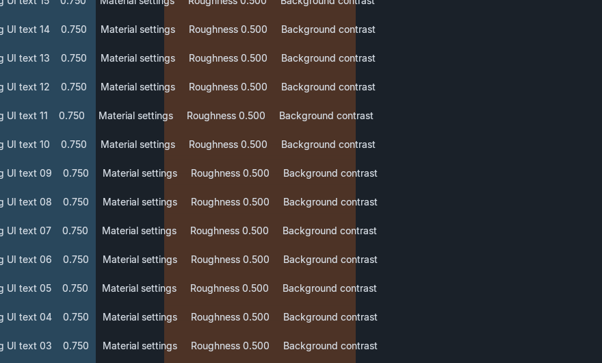
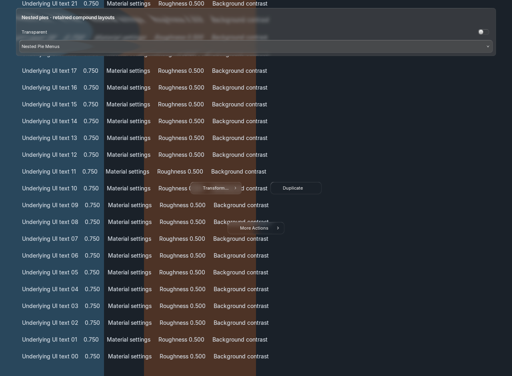
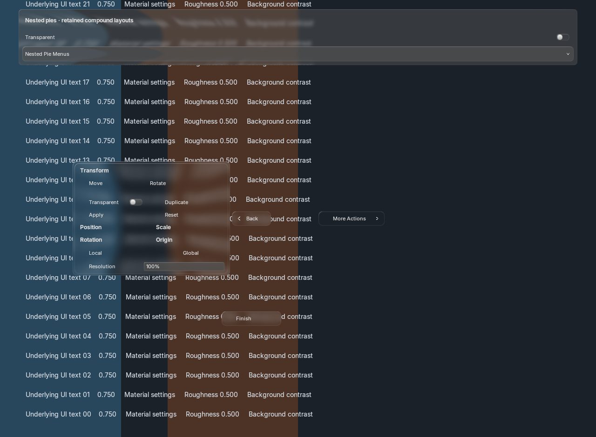
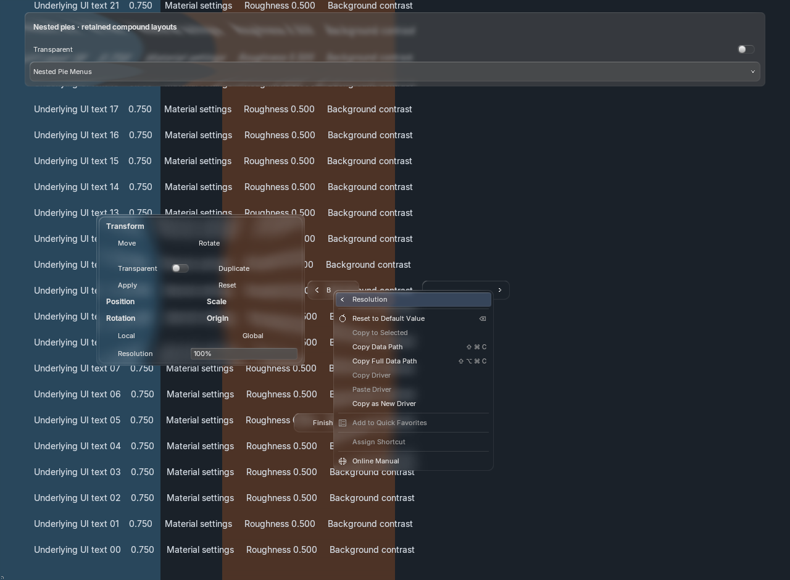
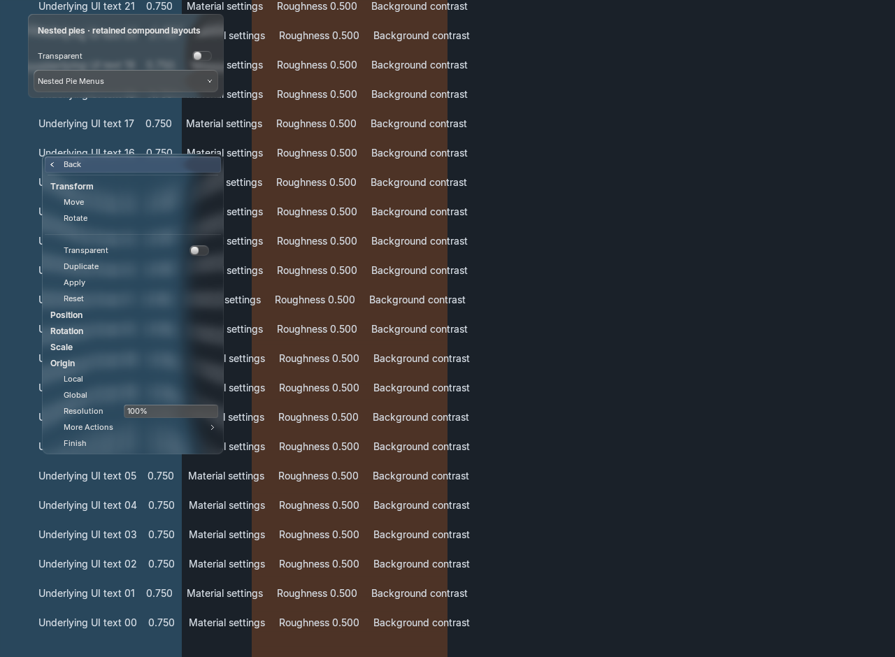

Actual Blender GPU captures · 30 October 2026 · shared source glass, theme and spring motion.
Open a nested ring from a pie or ordinary menu. The child grows from the selection point, keeps exact property contexts, and returns through the center Back button, Left Arrow or Escape. Split, column-flow and grid-flow groups share the retained panel layout engine, with alignment, logical sizing, scaling, line/space separators and elastic row spacers.
Implementation evidence for your QA; exact reference matching and full parity remain open. Every windowed launch used --no-window-focus, but the audit still recorded Blender activation. No deliberate activation or focus-restoration workaround was used.





| Blender / scale | Nested | Context | Narrow | Motion disabled |
|---|---|---|---|---|
| 5.2.2 / 1× | PNG | PNG | PNG | PNG |
| 5.2.2 / 1.5× | PNG | PNG | PNG | PNG |
| 5.2.2 / 2× | PNG | PNG | PNG | PNG |
| 5.1.2 / 1× | PNG | PNG | PNG | PNG |
Six background RNA/regression processes, four GPU fixtures and two native N-panel input fixtures passed. 144 animation frames matched byte-for-byte with native text batching on/off. Shared backdrop/strong-blur revisions and retained shader/batch/font resources stayed stable. Native N-panel tests exercise the narrow fallback; radial presentation is covered by the GPU fixtures.
Nested compound CPU paint: median 0.317 ms; p95 0.373 ms. Paired ordinary-list medians: 0.139 ms baseline / 0.145 ms current. These are CPU submission timings without readback, not GPU completion or full performance acceptance.
Results and remaining gaps · Launches and source fingerprints · Focus audit · Navigation trajectory · Integration guide